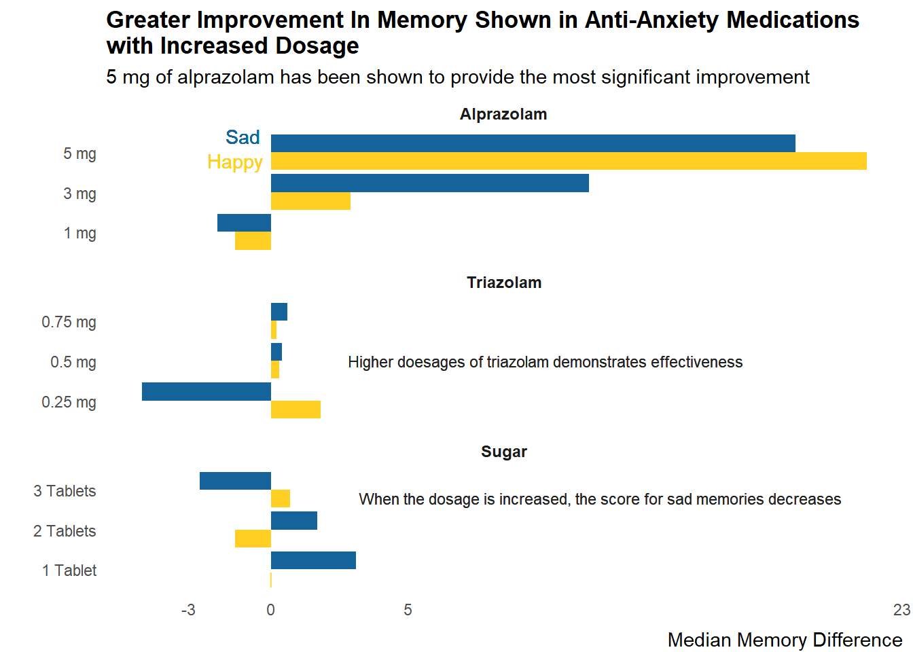
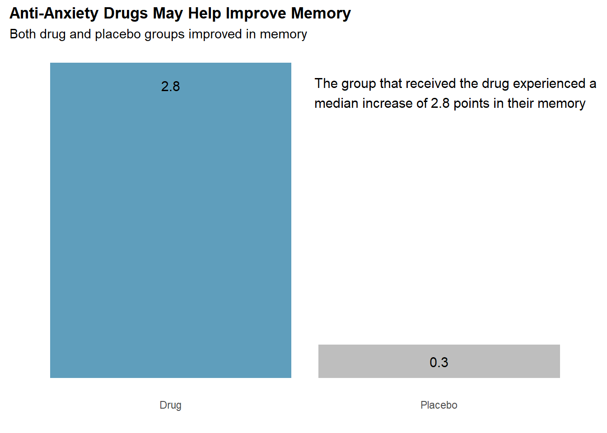
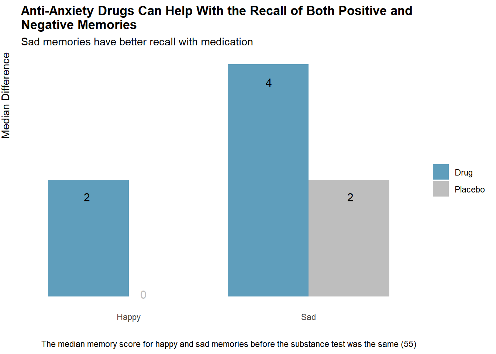

Anti-Anxiety Medication on Memory Recall
Code
df <- df %>%
mutate(
Drug = case_when(
Drug == "A" ~ "Alprazolam",
Drug == "T" ~ "Triazolam",
Drug == "S" ~ "Sugar",
TRUE ~ as.character(Drug)
),
mode = case_when(
Drug != 'Sugar' ~ 'Drug',
Drug == 'Sugar' ~ 'Placebo'
),
Happy_Sad_group = case_when(
Happy_Sad_group == "H" ~ "Happy",
Happy_Sad_group == "S" ~ "Sad",
TRUE ~ as.character(Happy_Sad_group)
),
age = case_when(
age >= 24 & age <= 35 ~ 'Young-Adult',
age >= 36 & age <= 49 ~ 'Adult',
age >= 50 & age <= 65 ~ 'Older-Adult',
age >= 66 ~ 'Elderly',
TRUE ~ as.character(age)
),
Dosage = case_when(
Drug == 'Alprazolam' & Dosage == 1 ~ '1 mg',
Drug == 'Alprazolam' & Dosage == 2 ~ '3 mg',
Drug == 'Alprazolam' & Dosage == 3 ~ '5 mg',
Drug == 'Triazolam' & Dosage == 1 ~ '0.25 mg',
Drug == 'Triazolam' & Dosage == 2 ~ '0.5 mg',
Drug == 'Triazolam' & Dosage == 3 ~ '0.75 mg',
Drug == 'Sugar' & Dosage == 1 ~ '1 Tablet',
Drug == 'Sugar' & Dosage == 2 ~ '2 Tablets',
Drug == 'Sugar' & Dosage == 3 ~ '3 Tablets',
TRUE ~ as.character(Dosage)
)
) %>%
mutate(
Drug = as_factor(Drug),
Happy_Sad_group = as_factor(Happy_Sad_group),
age = as_factor(age)
)Code
medvplac <- df %>%
group_by(Drug, Dosage, Happy_Sad_group, mode) %>%
summarize(
avg_mem_diff = round(mean(Diff, na.rm = TRUE), 2),
median_diff = round(median(Diff, na.rm = TRUE), 2),
.groups = "drop_last"
) %>%
mutate(
Drug = as_factor(Drug),
Drug = fct_relevel(Drug, 'Alprazolam', 'Triazolam', 'Sugar'),
mode = factor(mode, levels = c("Drug", "Placebo")),
mode = fct_relevel(mode, 'Drug', 'Placebo')
) %>%
arrange(factor(mode, levels = c("Drug", "Placebo")), Drug, Dosage, Happy_Sad_group) %>%
rename(Group = Happy_Sad_group, Class = mode, `Average Memory Difference` = avg_mem_diff, 'Median Memory Difference' = median_diff)Code
druggroup <- df %>%
group_by(Drug, Dosage, Happy_Sad_group) %>%
summarize(
median_mem_diff = round(median(Diff), 2)
) %>%
mutate(Drug = fct_relevel(Drug, 'Alprazolam', 'Triazolam', 'Sugar')) %>%
arrange(Drug, Dosage, Happy_Sad_group)
druggroup <- druggroup %>%
mutate(Dosage = factor(Dosage, levels = c("1 mg", "3 mg", "5 mg", "0.25 mg", "0.5 mg", "0.75 mg", "1 Tablet", "2 Tablets", "3 Tablets")),
Happy_Sad_group = factor(Happy_Sad_group, levels = c('Happy', 'Sad')))Introduction
I have had a long-standing interest in pharmaceuticals. I recently came across a dataset on Kaggle that examined the effects of anti-anxiety medication on memory recall. The experiment involved participants who were primed with happy or sad memories, and I found it intriguing. I decided to address the questions that inspired the study and plan to present my findings with the corresponding questions stated in the Kaggle dataset information as headings. To avoid issues with outliers, I will be using the median instead of the mean for comparisons.
The dataset can be found here. The experiment was executed under the supervision of Mr. Almohalwas at UCLA.
Table Covering General Analysis
Code
formattable(medvplac, list(
`Average Memory Difference` = formatter("span",
style = x ~ formattable::style(
display = "block",
padding = "0 4px",
`border-radius` = "4px",
`background-color` = ifelse(x > 0, "#4dcd33", "#ea4e4e")
)
),
`Median Memory Difference` = formatter("span",
style = x ~ formattable::style(
display = "block",
padding = "0 4px",
`border-radius` = "4px",
`background-color` = ifelse(x > 0, "#4dcd33", "#ea4e4e")
)
)
))| Drug | Dosage | Group | Class | Average Memory Difference | Median Memory Difference |
|---|---|---|---|---|---|
| Alprazolam | 1 mg | Happy | Drug | -0.61 | -1.30 |
| Alprazolam | 1 mg | Sad | Drug | 1.14 | -1.95 |
| Alprazolam | 3 mg | Happy | Drug | 2.12 | 2.90 |
| Alprazolam | 3 mg | Sad | Drug | 9.65 | 11.60 |
| Alprazolam | 5 mg | Happy | Drug | 23.58 | 21.70 |
| Alprazolam | 5 mg | Sad | Drug | 21.70 | 19.10 |
| Triazolam | 0.25 mg | Happy | Drug | 1.29 | 1.80 |
| Triazolam | 0.25 mg | Sad | Drug | -3.77 | -4.70 |
| Triazolam | 0.5 mg | Happy | Drug | 1.58 | 0.30 |
| Triazolam | 0.5 mg | Sad | Drug | 0.72 | 0.40 |
| Triazolam | 0.75 mg | Happy | Drug | -3.43 | 0.20 |
| Triazolam | 0.75 mg | Sad | Drug | 0.15 | 0.60 |
| Sugar | 1 Tablet | Happy | Placebo | 0.71 | 0.00 |
| Sugar | 1 Tablet | Sad | Placebo | 4.06 | 3.10 |
| Sugar | 2 Tablets | Happy | Placebo | 1.05 | -1.30 |
| Sugar | 2 Tablets | Sad | Placebo | -2.56 | 1.70 |
| Sugar | 3 Tablets | Happy | Placebo | -1.70 | 0.70 |
| Sugar | 3 Tablets | Sad | Placebo | -2.59 | -2.60 |
How does anti-anxiety medicine affect you differently by age?
Code
ggplot(age_group, aes(x = age, y = median_diff, fill = Drug)) +
geom_bar(stat = 'identity', position = 'dodge') +
scale_fill_manual(values = c('Alprazolam' = '#2e7ee3', 'Sugar' = '#ff8f11', 'Triazolam' = '#5f9ebc')) +
labs(x = '', y = 'Median Difference',
title = 'Elderly Individuals (66+) May Benefit From Anti-Anxiety Medications to \nImprove Their Memory',
subtitle = 'Alprazolam can help improve memory in individuals of all ages',
caption = 'Young-Adult: 24-35 | Adult: 36-49 | Older-Adult: 50-65 | Elderly: 66+') +
scale_y_continuous(breaks = c(0, 5, 16)) +
theme(
plot.title = element_text(face = 'bold'),
plot.caption = element_text(hjust=0),
panel.background = element_blank(),
axis.ticks = element_blank(),
axis.title.y = element_text(hjust = 1, vjust = 3),
legend.title = element_blank()
) +
annotate('text', x = Inf, y = Inf, label = '0', size = 4, color = '#5f9ebc', hjust=48, vjust=25.5)
Is there a level of plateauing in effectiveness of anti-anxiety medicine - If so, at what point? | Effectiveness of placebos in a test environment?
Code
graph <- ggplot(druggroup, aes(x = Dosage, y = median_mem_diff, group = Happy_Sad_group, fill = Happy_Sad_group)) +
geom_col(position = position_dodge()) +
facet_wrap(~Drug, scales = "free_y", ncol = 1) +
coord_flip() +
scale_fill_manual(values = c('Happy' = '#ffd023', 'Sad' = '#14639a')) +
labs(x='', y = 'Median Memory Difference', title = 'Greater Improvement In Memory Shown in Anti-Anxiety Medications \nwith Increased Dosage', subtitle = '5 mg of alprazolam has been shown to provide the most significant improvement') +
scale_y_continuous(breaks=c(-3, 0, 5, 23)) +
theme(
legend.position = 'none',
plot.title = element_text(face = 'bold'),
panel.background = element_blank(),
axis.ticks = element_blank(),
strip.background = element_blank(),
axis.title.x = element_text(hjust=1, vjust = -1),
strip.text = element_text(face = 'bold', size=9))
graph +
geom_text(data = subset(druggroup, Drug == "Alprazolam"), aes(x = 3.4, y = -1, label = "Sad"), color = '#14639a') +
geom_text(data = subset(druggroup, Drug == "Alprazolam"), aes(x = 2.8, y = -1.3, label = "Happy"), color = '#ffd023') +
geom_text(data = subset(druggroup, Drug == "Sugar"), aes(x = 2.8, y = 12, label = "When the dosage is increased, the score for sad memories decreases"), color = 'black', alpha = 0.3, size=3) +
geom_text(data = subset(druggroup, Drug == "Sugar"), aes(x = 0.8, y = 0, label = "|"), color = '#ffd023', alpha = 0.3, size=3) +
geom_text(data = subset(druggroup, Drug == "Triazolam"), aes(x = 2, y = 10, label = "Higher doesages of triazolam demonstrates effectiveness"), color = 'black', alpha = 0.3, size=3)
Effect of anti-anxiety medicine on memory recall?
Code
ggplot(medvsplac, aes(x = mode, y = median_diff, fill = mode)) +
geom_col() +
scale_fill_manual(values = c("Drug" = '#5f9ebc', "Placebo" = 'grey')) +
labs(x='', y = 'Median Difference', title='Anti-Anxiety Drugs May Help Improve Memory', subtitle='Both drug and placebo groups improved in memory') +
theme(
plot.title = element_text(face = 'bold'),
panel.background = element_blank(),
axis.ticks = element_blank(),
legend.position = 'none',
axis.text.y = element_blank(),
axis.title.y = element_blank()) +
annotate('text', x = 'Drug', y = 2.6, label = '2.8', size = 4, color = 'black') +
annotate('text', x = 'Placebo', y = 0.15, label = '0.3', size = 4, color = 'black') +
annotate('text', x = Inf, y = Inf, label = 'The group that received the drug experienced a \nmedian increase of 2.8 points in their memory ', hjust = 1, vjust = 2, size = 4, color = 'black')
Can happy or sad memories be better recalled with anti-anxiety medicine?
Code
ggplot(emotion, aes(x=Happy_Sad_group, y = median_diff, fill = mode)) +
geom_bar(stat = 'identity', position = 'dodge') +
scale_fill_manual(values = c('Drug' = '#5f9ebc', 'Placebo' = 'grey')) +
labs(x = '', y = 'Median Difference',
title = 'Anti-Anxiety Drugs Can Help With the Recall of Both Positive and \nNegative Memories',
subtitle = 'Sad memories have better recall with medication',
caption = 'The median memory score for happy and sad memories before the substance test was the same (55)') +
theme(
plot.title = element_text(face = 'bold'),
panel.background = element_blank(),
axis.ticks = element_blank(),
axis.title.y = element_text(hjust = 1, vjust = 3),
legend.title = element_blank(),
axis.text.y = element_blank()
) +
annotate('text', x = Inf, y = Inf, label = '0', size = 4, color = 'grey', hjust=44, vjust=29) +
annotate('text', x = Inf, y = Inf, label = '2', size = 4, color = 'black', hjust=53, vjust=17.5) +
annotate('text', x = Inf, y = Inf, label = '4', size = 4, color = 'black', hjust=24, vjust=4) +
annotate('text', x = Inf, y = Inf, label = '2', size = 4, color = 'black', hjust=11, vjust=17.5)
Conclusion
Lastly, I conducted a four-way ANOVA test to assess the impact of drug type, dosage, memory priming type, and age on the difference between memory test results before and after substance intake. Our alpha will be set to 0.05.
Df Sum Sq Mean Sq F value Pr(>F)
Drug 2 4305 2152.4 30.564 1.03e-11 ***
Dosage 6 6372 1062.0 15.080 3.17e-13 ***
Happy_Sad_group 1 9 8.8 0.125 0.724
age 3 48 16.1 0.228 0.876
Drug:Happy_Sad_group 2 122 61.1 0.867 0.422
Dosage:Happy_Sad_group 6 624 104.0 1.477 0.190
Drug:age 6 100 16.7 0.237 0.964
Dosage:age 14 501 35.8 0.508 0.925
Happy_Sad_group:age 3 287 95.6 1.358 0.258
Drug:Happy_Sad_group:age 4 280 70.0 0.993 0.413
Dosage:Happy_Sad_group:age 12 419 34.9 0.496 0.914
Residuals 138 9718 70.4
---
Signif. codes: 0 '***' 0.001 '**' 0.01 '*' 0.05 '.' 0.1 ' ' 1As seen from the summary above, the type of drug and dosage significantly impact memory differences, while the other dependent variables and their interactions show no significance. Now, we need to check if the assumptions of the ANOVA test are satisfied.
According to the plots, the assumptions are concerning. The Residuals vs. Fitted plot shows unequal variances and indicates heteroscedasticity. The Q-Q Residuals plot indicates a heavy-tailed sample. Therefore, the ANOVA test should not be entirely relied upon, and further research is necessary to explore the potential relationships.